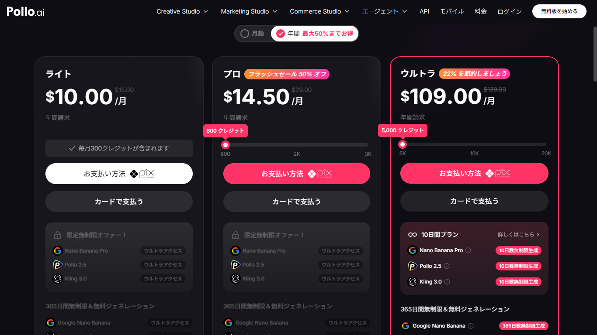

Pollo AIの料金体系 — 「クレジット制」の基本
Pollo AIは月額定額でクレジットを購入し、そのクレジットを消費して動画や画像を生成する「クレジット制」の料金体系です。NetflixやSpotifyのような「使い放題」ではありません。どのモデルを、どの設定で使うかによって、1本の動画にかかるクレジット数が大きく変わります。
この記事では、Pollo AIの各プランの内容、モデル別の実際のクレジット消費量、そして「このプランで実際に何本作れるのか」を具体的に計算します。
まず無料で試してみたい方はこちら（カード登録不要）
Pollo AIを無料で始めるプラン一覧と比較

| プラン | 月額（年間） | 月額（月払い） | 月間クレジット | 1クレジット単価 |
|---|---|---|---|---|
| 無料 | $0 | $0 | 初回20のみ | — |
| ライト | $10.00 | $15.00 | 300 | $0.033〜$0.050 |
| プロ | $14.50 | $29.00 | 800 | $0.018〜$0.036 |
| ウルトラ | $109.00 | $139.00 | 5,000 | $0.022〜$0.028 |
プロプランは現在50%オフのフラッシュセール中で、年間契約なら$14.50/月と非常に割安です。通常価格の$29/月と比べると半額で、クレジット単価ではウルトラプランに匹敵するコスパになります。
注意点：クレジットは月末にリセットされ、翌月に繰り越しできません。月の途中で加入すると、残りの日数分しか使えないのに1ヶ月分のクレジットが付与されるため、月初に加入するのがおすすめです。
全プラン共通の無制限無料モデル
どの有料プランでも、以下のモデルが回数制限なしで無料利用できます。
| モデル | 種類 | 用途 |
|---|---|---|
| Pollo 2.5 | 動画生成 | テキスト→動画、汎用 |
| Kling 3.0 | 動画生成 | 映画的マルチショット |
| Google Nano Banana | 画像生成 | テキスト→画像 |
| Nano Banana Pro | 画像生成 | 高品質画像 |
つまり、ライトプラン（$10/月）に加入するだけで、動画2モデル＋画像2モデルが使い放題になります。月300クレジットは上位モデル用の「追加予算」として使う、という考え方が最もコスパが良いです。
モデル別クレジット消費量 — 表示と実際の差
ここがPollo AIの料金を理解する上で最も重要なポイントです。モデル選択画面の「○○+ クレジット」は最低構成（最低解像度・最短秒数・オーディオなし）の数値です。

実際にどれくらい変わるか、検証した結果です。
Pollo 2.5の場合
| 設定 | クレジット |
|---|---|
| 4秒 / 720p / オーディオなし | 4 |
| 4秒 / 1080p / オーディオなし | 8 |
| 4秒 / 720p / オーディオあり | 10 |
| 4秒 / 1080p / オーディオあり | 20 |
表示は「4+」ですが、実際は4〜20クレジット。最大5倍の差があります。ただしPollo 2.5は無制限無料モデルなので、クレジットを消費しても追加課金にはなりません。
Seedance 2.0 Miniの場合
| 設定 | クレジット |
|---|---|
| 4秒 / 480p（最安構成） | 20 |
| 15秒 / 720p（最高構成） | 150 |
表示は「20+」ですが、最高構成では150クレジット。7.5倍の差です。なお、Seedance 2.0 Miniではオーディオの有無でクレジット消費は変わりません。Pollo 2.5ではオーディオ追加で2.5倍になります。このように、料金に対するオーディオの影響はモデルごとに異なります。
実際のクレジット消費は生成前に画面で確認できます
料金プランを確認する各プランで「実際に何本作れるか」シミュレーション
「300クレジット」「800クレジット」と言われてもピンとこないので、具体的なシナリオで計算します。
シナリオA：SNSクリエイター（量重視）
使用モデル：Pollo 2.5（無制限無料）＋ Seedance 1.0 Pro Fast（1クレジット〜）
| プラン | 無制限モデルでの生成 | 有料モデル追加分 |
|---|---|---|
| ライト（300cr） | 無制限 | +最大300本（Pro Fast最安） |
| プロ（800cr） | 無制限 | +最大800本（Pro Fast最安） |
Pollo 2.5とKling 3.0だけでも十分な量を生産できるため、ライトプランでも余裕があります。
シナリオB：品質重視クリエイター
使用モデル：Seedance 2.0 Mini（20〜150クレジット）中心
| プラン | 最安構成（20cr） | 中間構成（80cr想定） | 最高構成（150cr） |
|---|---|---|---|
| ライト（300cr） | 15本 | 3〜4本 | 2本 |
| プロ（800cr） | 40本 | 10本 | 5本 |
| ウルトラ（5,000cr） | 250本 | 62本 | 33本 |
品質重視で使う場合、ライトプランでは月2〜15本が現実的なラインです。プロプランなら月5〜40本。それ以上必要ならウルトラプランの検討が必要です。
シナリオC：最高品質のみ
使用モデル：Seedance 2.0（40+クレジット）やVeo 3.1（60+クレジット）
| プラン | Seedance 2.0 最安（40cr） | Veo 3.1 最安（60cr） | Sora 2 Pro（90cr） |
|---|---|---|---|
| ライト（300cr） | 7本 | 5本 | 3本 |
| プロ（800cr） | 20本 | 13本 | 8本 |
| ウルトラ（5,000cr） | 125本 | 83本 | 55本 |
最高品質モデルを高設定で使う場合、ライトプランでは月数本が限界です。
おすすめプランの選び方
AI動画を初めて試す人 → 無料プラン。まず20クレジット＋無制限モデルで感触を掴む。
SNS用コンテンツを作りたい人 → ライトプラン（$10/月）。無制限モデル中心で使い、たまに上位モデルを試す程度なら十分。
複数モデルを比較しながら制作したい人 → プロプラン（$14.50〜/月）。セール中ならコスパ最強。800クレジットあれば上位モデルも月10〜20本は使える。
プロフェッショナル用途で大量に生成する人 → ウルトラプラン（$109/月）。5,000クレジット＋10日間無制限キャンペーン付き。
プロプランは現在50%オフのフラッシュセール中
セール価格を確認するまとめ — 表示価格だけで判断しないことが大事
Pollo AIの料金体系を正しく理解するポイントは3つです。
モデル選択画面の「○○+ クレジット」は最低構成の数値であり、実際の消費量は設定で大きく変わる。生成ボタン横の数字を必ず確認すること。
無制限無料モデル（Pollo 2.5、Kling 3.0）を活用すれば、有料プランのクレジットは上位モデル専用の「特別予算」として使える。
クレジットは月末リセット。使い切れなかった分は消滅するため、プランは「毎月確実に使い切れる量」で選ぶのが鉄則。
詳しい使い方やモデル別の生成品質については、Pollo AI総合レビューをご覧ください。
まずは無料プランで実際のクレジット消費を体験
無料でPollo AIを始める